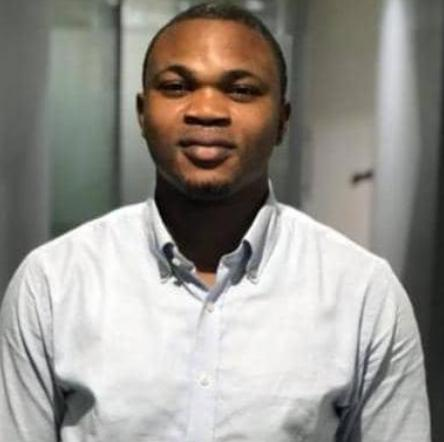

I am a Web Developer and Microsoft Administrator.
I'm the founder of Victriana Technologies. I ❤️ God.,
Design and Development
I started learning programming when I was 24
because I wanted to create things that would work
according to my ideas and vision. Since then,
I have continued to learn, grow, and develop my skills.
Design and Development
I am an abbitius, curious and determined learner
with strond probleb solving skill potential,technical interest
creativity and passion for building software projects.
My best skill is learning skills and turning ideas into practical opportunities
.
if you abbitius and want to learn more about me,
my skills and my work, please feel free to contact me.
I would be happy to connect with you and
discuss potential opportunities for collaboration or employment.
You can reach me via email at ajimokovictoro@gmail.com